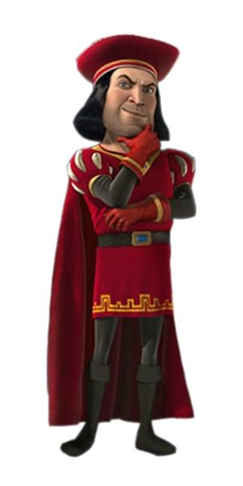
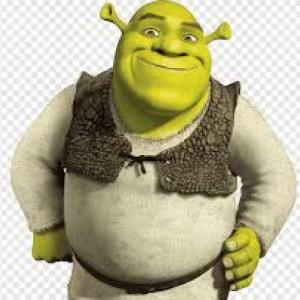

Lord Farquaad
Lord Farquaad es el villano de la película animada Shrek, conocido por su corte de pelo con flequillo recto, su diminuta estatura y su personalidad imperiosa.
Doris
Doris es una de las antiguas camareras de Cenicienta en la Manzana Envenenada. Tiene una voz masculina profunda y un maquillaje similar al de una drag queen, que incluye sombra de ojos azul y cejas prominentes
Shrek
Shrek es un personaje de un ogro creado por el escritor estadounidense William Steig, Shrek es el protagonista del libro de 1990, adaptado por DreamWorks Animation en la película homónima del año 2001
Burro
Es un asno/burro parlante pequeño y un poco relleno/regordete, cuya facción más característica es su gran dentadura. Es el mejor amigo de Shrek y es muy buen amigo del Gato con Botas

Jengi
El Hombre de Jengibre, también llamado "Jengi", es una galleta de jengibre que fue horneada por Jero el Pastelero. Él es un aliado de Shrek y un personaje de apoyo en las películas de la saga Shrek.